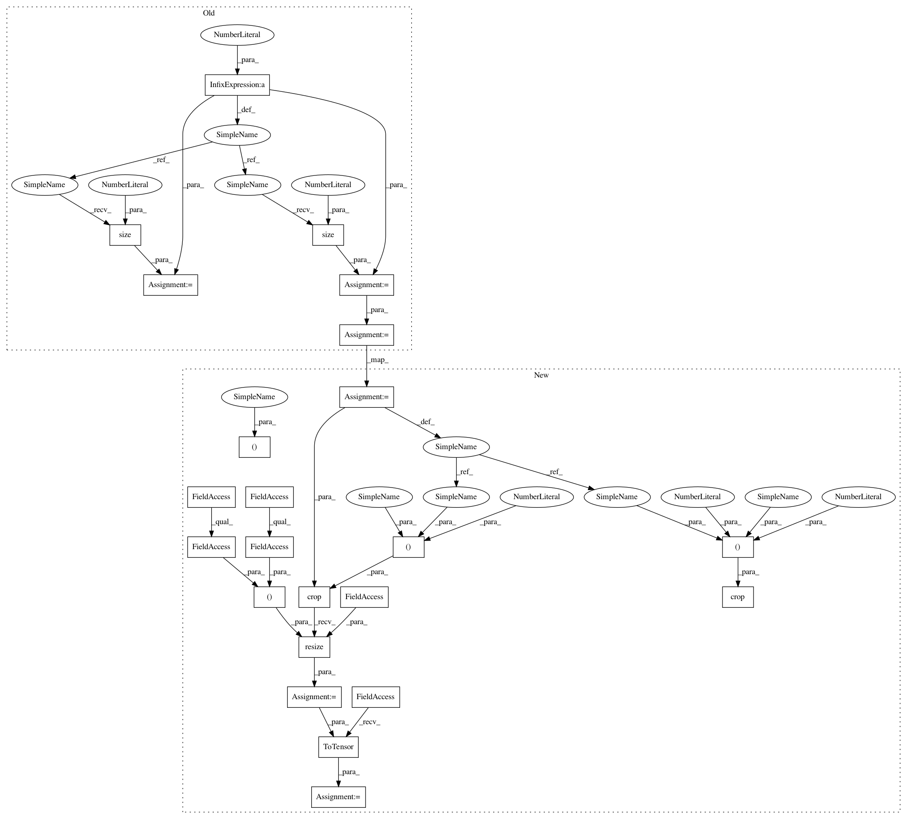

219b3f98001448eff5f2cbb5467940b6a2bfb4fe,data/aligned_dataset.py,AlignedDataset,__getitem__,#AlignedDataset#Any#,19
Before Change
AB_path = self.AB_paths[index]
AB = Image.open(AB_path).convert("RGB")
AB = AB.resize(
(self.opt.loadSize * 2, self.opt.loadSize), Image.BICUBIC)
AB = transforms.ToTensor()(AB)
w_total = AB.size(2)
w = int(w_total / 2)
h = AB.size(1)
if self.center_crop:
w_offset = int(round((w - self.opt.fineSize) / 2.0))
h_offset = int(round((h - self.opt.fineSize) / 2.0))
else:
After Change
def __getitem__(self, index):
AB_path = self.AB_paths[index]
AB = Image.open(AB_path).convert("RGB")
w, h = AB.size
w2 = int(w / 2)
A = AB.crop((0, 0, w2, h)).resize((self.opt.loadSize, self.opt.loadSize), Image.BICUBIC)
B = AB.crop((w2, 0, w, h)).resize((self.opt.loadSize, self.opt.loadSize), Image.BICUBIC)
A = transforms.ToTensor()(A)
B = transforms.ToTensor()(B)
w_offset = random.randint(0, max(0, self.opt.loadSize - self.opt.fineSize - 1))
h_offset = random.randint(0, max(0, self.opt.loadSize - self.opt.fineSize - 1))
A = A[:, h_offset:h_offset + self.opt.fineSize, w_offset:w_offset + self.opt.fineSize]
In pattern: SUPERPATTERN
Frequency: 3
Non-data size: 23
Instances
Project Name: junyanz/BicycleGAN
Commit Name: 219b3f98001448eff5f2cbb5467940b6a2bfb4fe
Time: 2018-09-03
Author: junyanzhu89@gmail.com
File Name: data/aligned_dataset.py
Class Name: AlignedDataset
Method Name: __getitem__
Project Name: junyanz/pytorch-CycleGAN-and-pix2pix
Commit Name: 6718e13d5ded5f630cba3a8eab7e29fc7a7455e2
Time: 2018-03-17
Author: junyanzhu89@gmail.com
File Name: data/aligned_dataset.py
Class Name: AlignedDataset
Method Name: __getitem__
Project Name: junyanz/BicycleGAN
Commit Name: 219b3f98001448eff5f2cbb5467940b6a2bfb4fe
Time: 2018-09-03
Author: junyanzhu89@gmail.com
File Name: data/aligned_dataset.py
Class Name: AlignedDataset
Method Name: __getitem__